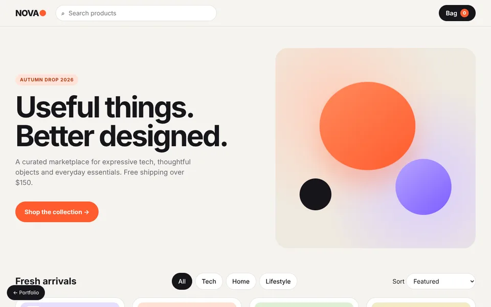
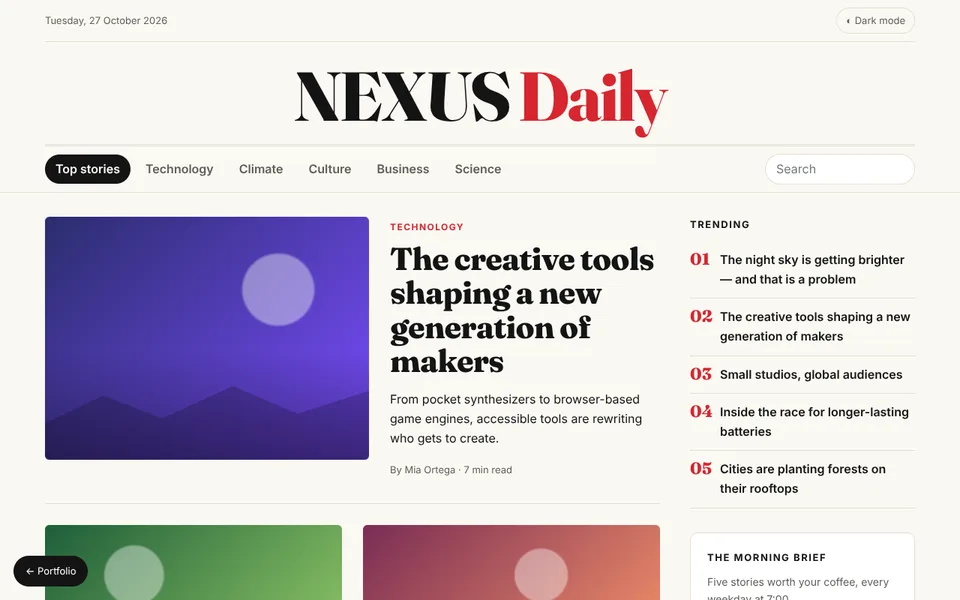
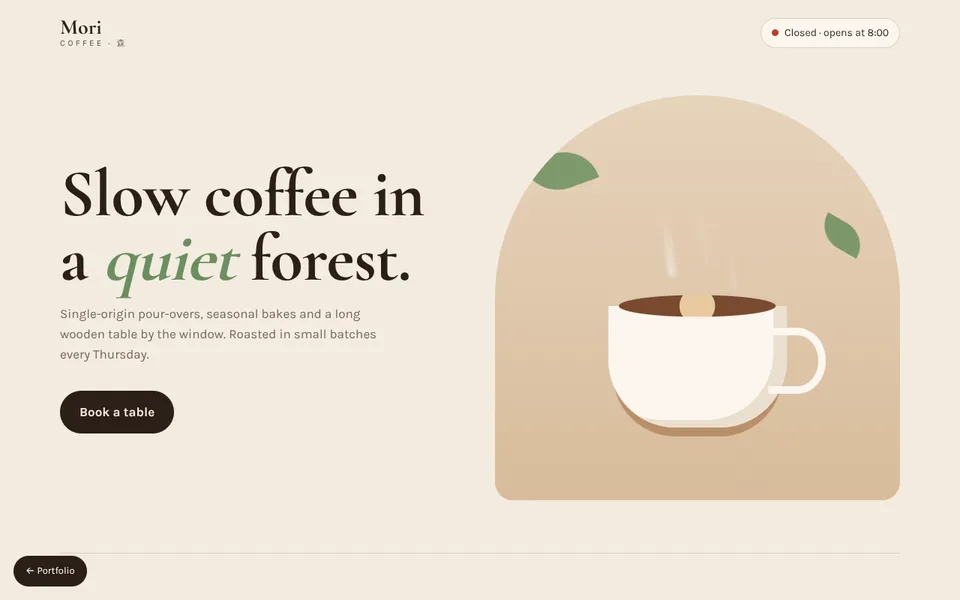
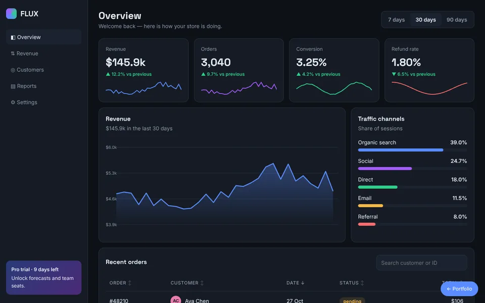
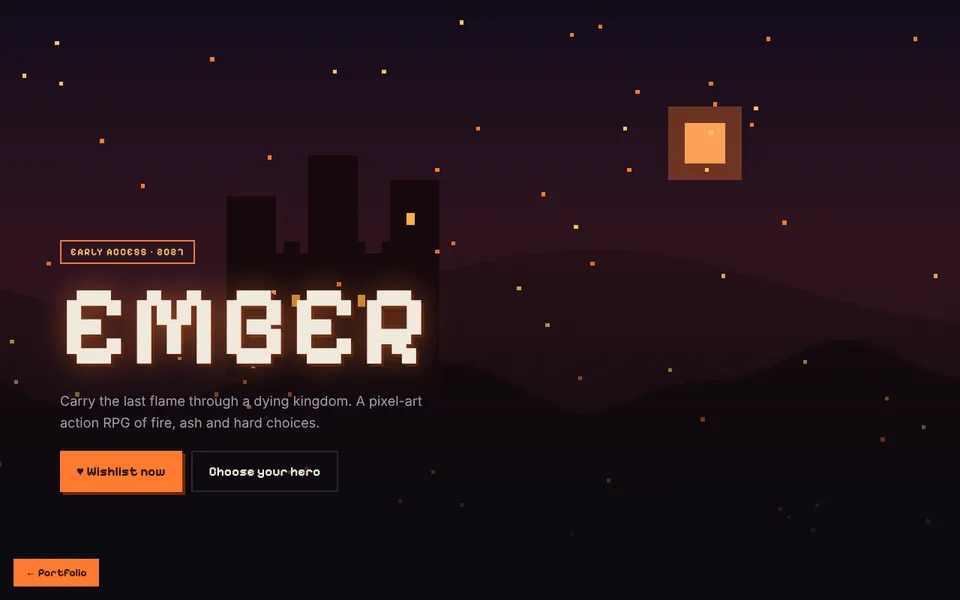

Web tool · MIT
Pixel World Generator
Living procedural pixel worlds: 8 biomes, 22 kinds of landmarks, seasons, storms, auroras, time-lapses and panoramas. Exports seamless GIFs, PNG and WebM; ships a CLI and a daily world via GitHub Actions.
Open for projects · 2026
Game, desktop and web developer. Unity, Godot and Roblox, C# and TypeScript — from the first prototype to release, with clean code and clear communication.

01 · Selected work
Public repositories, from developer tools to commercial websites. The code is open — see exactly how everything works.
Web tool · MIT
Living procedural pixel worlds: 8 biomes, 22 kinds of landmarks, seasons, storms, auroras, time-lapses and panoramas. Exports seamless GIFs, PNG and WebM; ships a CLI and a daily world via GitHub Actions.
Unity library · MIT
Dungeon generator: caves from custom Perlin noise, rooms and corridors with guaranteed connectivity. 3D prefabs or 2D Tilemap, a UPM package with tests.
Client website
Catalog for a beverage importer from six countries: filters, search, product cards and a validated contact form in vanilla JavaScript.
02 · In development
Games and client work in private repositories. The code isn’t public, but I’m happy to walk you through it.
Online RPG · active
A zoned 2.5D MMO: a Unity 6 client and my own authoritative .NET 10 server that decides damage, positions and rewards. A custom protocol over UDP with DTLS, PostgreSQL and 25 migrations.
Roblox · active
A multiplayer combat RPG about cultivation: from martial artist (wuxia) to immortal (xianxia). Code syncs into Studio via Rojo; game logic is tested outside Roblox.
Roguelike · playable
A turn-based dark-fantasy roguelike: D&D-style d20 combat, a 120-skill tree, permadeath and a bestiary. 192 commits and ≈ 18,000 lines of GDScript.
FPS · prototype
A first-person shooter in the spirit of PS1 and Gothic: low-poly dungeons, pixel textures, melee, magic, a bow and NavMesh-driven skeletons. Every system written by hand.
Team project · 2023
A 2D action-RPG built by a team of three: context-steering enemies, an interface-based inventory, loot and room transitions. Branches and pull requests throughout.
Client website · delivered
A multi-page site for a visa agency in three languages — Russian, English and Chinese: instant language switching, a mobile menu and a WeChat modal.
03 · Websites
Different niches, different character. Every demo works: cart, filters, charts, booking, validated forms.

01 Ecommerce NOVA Market Catalog, filters, sorting, search and a slide-in cart with a free-shipping meter.
02 Media NEXUS Daily Sections, search, dark mode and a newsletter signup with validation.
03 Local business MORI Coffee Tabbed menu, live “open now” status and table booking.
04 SaaS dashboard FLUX Analytics KPIs, an interactive chart, traffic channels, sortable and searchable orders.
05 Game landing EMBER Animated pixel scene, hero picker, gallery, roadmap and wishlist.04 · Services
Gameplay, combat systems, procedural generation, UI and prototypes in Unity, Godot and Roblox — including networked games with a server.
Windows utilities, .NET servers, PostgreSQL databases, automation and Python tooling.
Landing pages, shops, dashboards and interactive animated sites — fast, responsive and accessible.
05 · Stack
Unity · Godot · Roblox Studio
C# · TypeScript · JavaScript · GDScript · Luau · Python · SQL
React · Vite · PixiJS · GSAP · HTML · CSS · Web Workers
.NET · PostgreSQL · UDP networking · REST
Git · GitHub Actions · automated tests · Aseprite
06 · Process
Goals, audience and the smallest useful first version.
Visible progress in short stages you can try yourself.
Tests, responsive details, performance and accessibility.
Clean code, documentation and a clear handoff.
07 · Contact
Tell me about the game, app or website and the result you need. I reply within a day.